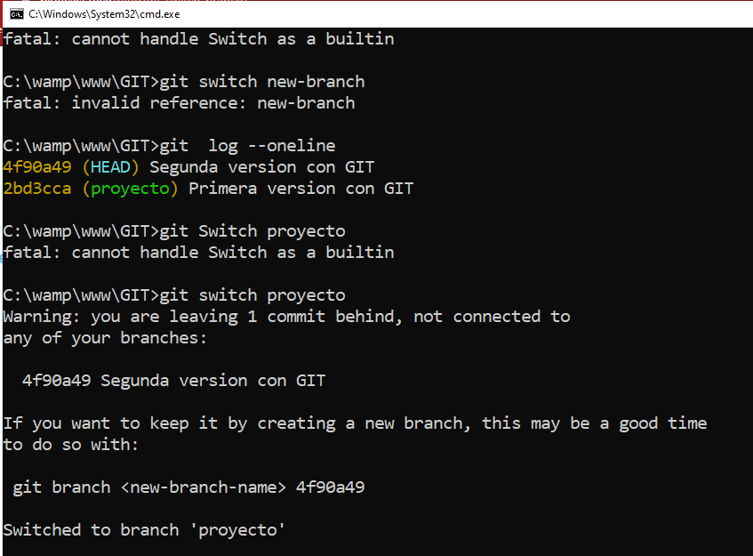

Mas comandos GIT
git clone
Ponemos git clone para realizar una copia idéntica de la última versión del proyecto y la guarda en el ordenador.
git diff
git diff nos indicara los cambios que has hecho pero que aun no has preparado o las líneas exactas que fueron añadidas y eliminadas.
git checkout
Insertamos git checkout principalmente para cambiarte de una rama a otra o usar para examinar archivos y commits. Lo utilizaremos de la siguiente manera: git checkout --nombre-de-la-rama.
git restore
Restaura archivos en el árbol de trabajo desde el índice u otra confirmación. Este comando no actualiza su rama. También se puede usar para restaurar archivos en el índice desde otro commit.

git branch
El comando git branch nos permitirá crear, borrar, listar y eliminar las ramas
git fetch
git fetch este comando es el que le dice a tu git local que recupere la última información de los metadatos del original (aunque no hace ninguna transferencia de archivos. Es más bien como comprobar si hay algún cambio disponible).
git merge
El comando git merge fusionará cualquier cambio que se haya hecho en la base de código en una rama separada de tu rama actual como un nuevo commit.
git push
Después de haber confirmado los cambios, debemos enviar los commits al repositorio remoto para eso utilizamos el comando git push.

git pull
Colocamos el comando git pull este los utilizaremos para recoger y se aplicaran los cambios el local.
git rm
Al colocar el comando git rm nos borrara el archivo del repositorio donde lo tenemos guardado

git switch
Con git Switch este comando al ejecutar nos permitirá cambiar a otra rama.

git remote
El comando git remote te permite crear, ver y eliminar conexiones con otros repositorios. Las conexiones remotas se asemejan más a marcadores que a enlaces directos con otros repositorios